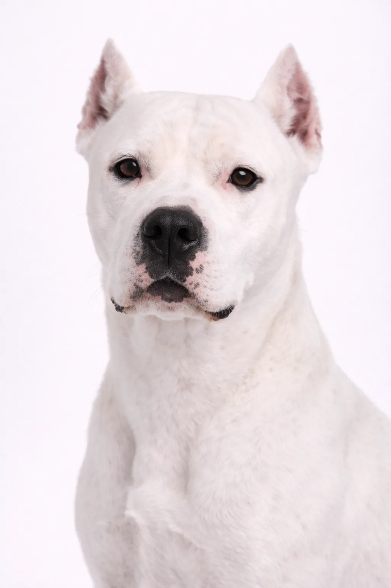

Dogo Argentino
Feito para o trabalho, dedicado à família — uma raça grande com capacidades sérias.
24-27 in
77-99 lbs
Avaliações da Raça
Temperamento
Visão Geral
O Dogo Argentino foi criado na Argentina para a caça de animais de grande porte, incluindo javalis e pumas.
Temperamento
O Dogo Argentino é conhecido por ser leal, corajoso e protetor. Sua inteligência e vontade de agradar tornam o treinamento uma experiência prazerosa. A socialização precoce ajuda-o a se tornar um companheiro equilibrado.
Saúde
Geralmente saudável, com expectativa de vida de 9 a 15 anos. Problemas comuns incluem displasia do quadril e torção gástrica. Consultas veterinárias regulares e cuidados preventivos são importantes. Manter um peso saudável ajuda a prevenir muitos problemas de saúde.
Exercício
Raça de alta energia que precisa de exercício diário vigoroso — pelo menos uma hora de atividade. Prospera com famílias ativas que gostam de atividades ao ar livre. A estimulação mental por meio de treinamento e brinquedos de raciocínio é igualmente importante. Sem exercício adequado, pode desenvolver problemas comportamentais.
⦿ Esta Raça é Certa para Você?
✓ Ideal Para
- Donos experientes com raças grandes
- Lares ativos
- Quem quer um protetor leal
- Casas com quintal seguro
✗ Não Ideal Para
- Donos de primeira viagem
- Moradores de apartamento
- Lares com vários cães
- Regiões com restrições à raça
Nosso Veredito: Cães de caça argentinos de grande porte com coração leal. Os Dogos são atléticos e protetores, mas precisam de donos experientes e socialização adequada.